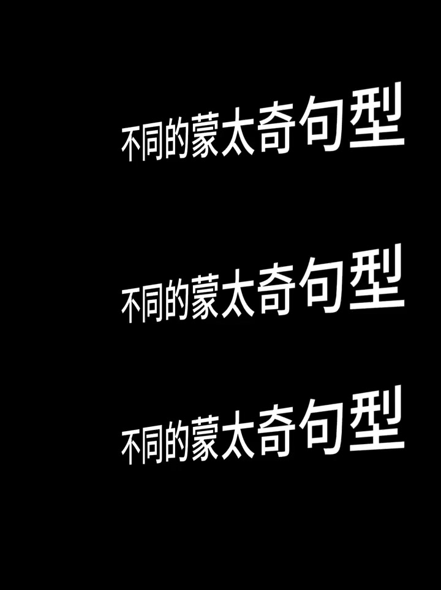
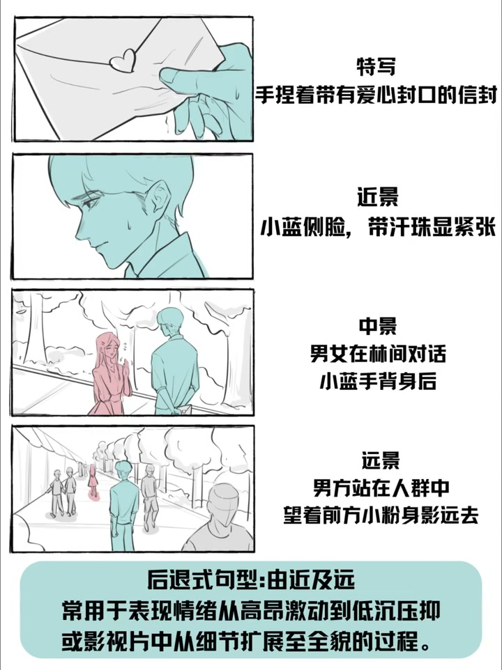
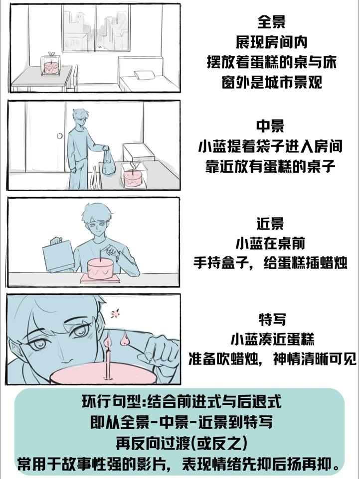

01
中文
蒙太奇理论听懂了，但拍的时候还是不知道该用什么句式？
EN
You get montage theory but freeze on which sentence to use?
表达提示which sentence（什么句式）

Scene English · 剪辑 · 蒙太奇句式
Montage Sentences: Learn Montage Instantly!
🎧 语音讲解
Sentences Turn Theory into Templates
情境蒙太奇理论听懂了但不知道用什么句式？句式就是可复用的画面组合模板。
蒙太奇理论听懂了，但拍的时候还是不知道该用什么句式？
You get montage theory but freeze on which sentence to use?
表达提示which sentence（什么句式）
句式就是把蒙太奇理论变成可以复用的具体操作模板。
A sentence turns montage theory into a reusable template.
表达提示reusable template（可复用模板）
比如多个相似画面快速切换来建立印象。
Like cutting similar shots fast to build an impression.
表达提示build an impression（建立印象）
两组反差画面交替出现来强化主题。
Alternating two contrasting sets to sharpen a theme.
表达提示sharpen a theme（强化主题）
学会了句式，剪辑时就知道下一刀该切什么。
With sentences, you know exactly what to cut next.
表达提示what to cut next（下一刀该切什么）
which sentence（什么句式
reusable template（可复用模板

The Accumulation Sentence
情境快速切换多个相似画面（如不同人喝咖啡），适合城市速写和情绪铺垫。
快速切换多个相似画面，比如不同人喝咖啡。
Cut fast between similar shots—different people sipping coffee.
表达提示similar shots（相似画面）
适合城市速写、情绪铺垫。
Great for city sketches and mood setting.
表达提示mood setting（情绪铺垫）
similar shots（相似画面
mood setting（情绪铺垫

The Contrast Sentence
情境两组反差画面交替出现，强化主题反差，适合今昔对比、贫富差距。
两组反差画面交替出现，强化主题反差。
Alternate two contrasting sets to sharpen the theme.
表达提示contrasting sets（反差画面）
适合今昔对比、贫富差距。
Fits past-versus-present and rich-versus-poor contrasts.
表达提示past vs present（今昔对比）
contrasting sets（反差画面
past vs present（今昔对比

The Repetition Sentence
情境同一类动作在不同场景重复出现，建立节奏和仪式感。
同一类动作在不同场景重复出现，建立节奏和仪式感。
Repeat one action across scenes for rhythm and ritual.
表达提示rhythm and ritual（节奏与仪式感）
记录同一个动作在不同时间地点的重复，比如每天早上喝咖啡。
Film the same act at different times and places—coffee every morning.
表达提示coffee every morning（每天早上的咖啡）
rhythm and ritual（节奏与仪式感

The Progression Sentence
情境画面从小到大，增强冲击力，适合高潮段落和情绪爆发。
画面从小到大，增强冲击力。
Grow from small to big to amplify impact.
表达提示grow in scale（从小到大）
适合高潮段落、情绪爆发。
Perfect for climaxes and emotional bursts.
表达提示emotional bursts（情绪爆发）
grow in scale（从小到大
emotional bursts（情绪爆发

Practice Accumulation
情境在日常视频中尝试积累句式：收集相似片段快切、刻意用对比、记录重复动作。
在日常视频中尝试积累句式：收集几个相似主题的短片段，快速切换在一起。
Practice: collect similar short clips and cut them fast.
表达提示collect clips（收集片段）
做一期对比内容时，刻意用对比句式，两组画面交替出现，强化反差。
For a comparison piece, deliberately alternate two sets for contrast.
表达提示deliberately alternate（刻意交替）
记录同一个动作在不同时间地点的重复，用重复句式剪在一起。
Record the same action repeatedly and assemble with the repetition sentence.
表达提示assemble with repetition（重复句式拼接）
collect clips（收集片段

Avoid These Pitfalls
情境画面太多、对比不够、节奏不对、只用一种句式，都是常见问题。
积累句式时画面太多？几个画面就足够了。
Too many shots when accumulating? A few suffice.
表达提示a few suffice（几个就够）
对比句式不够强烈？两组画面差异太小，选素材时就要注意反差。
Weak contrast? The two sets differ too little—choose materials with punch.
表达提示materials with punch（有反差的素材）
重复句式节奏不对？切换太快看不懂、太慢没感觉，根据音乐节奏定切换速度。
Repeat rhythm off? Sync the cut speed to the music.
表达提示sync to the music（跟着音乐节奏）
只用一种句式？多种句式结合的效果最好。
One sentence only? Mixing them works best.
表达提示mix sentences（句式组合）
句式是工具不是公式，根据内容灵活调整，不要生搬硬套。
Sentences are tools, not formulas—adapt flexibly to the content.
表达提示tools, not formulas（工具而非公式）
a few suffice（几个就够
sync to the music（跟着音乐节奏

Where Sentences Apply
情境每种句式都有最佳场景，适合短片创作与情绪内容，不适合教程访谈。
每种句式都有其最佳场景。
Each sentence has its best scenario.
表达提示best scenario（最佳场景）
适合短片创作、情绪内容。
Fits short films and emotional content.
表达提示emotional content（情绪内容）
单一场景的教程、访谈视频、新闻纪实类内容，则不太需要。
Single-scene tutorials, interviews, and news docs need them less.
表达提示single-scene tutorials（单场景教程）
best scenario（最佳场景
emotional content（情绪内容
说句式定义
说积累句式
说对比句式
说重复句式
说句式组合
句式让你知道下一刀。
积累画面几个就够。
反差要选明显素材。
重复切速跟音乐。
句式是工具不是公式。